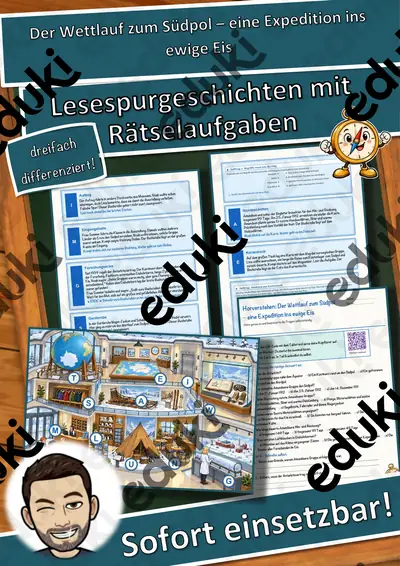
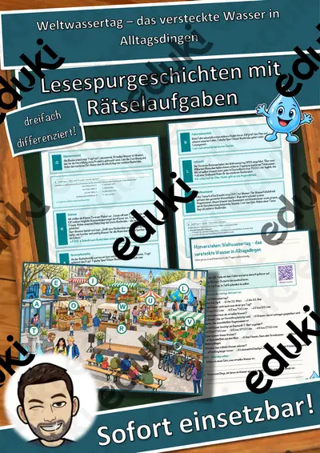
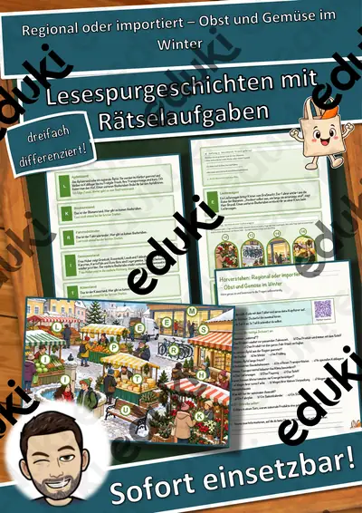
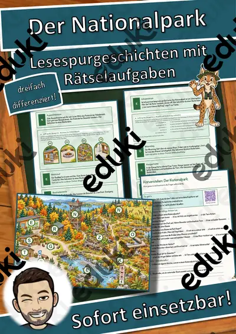
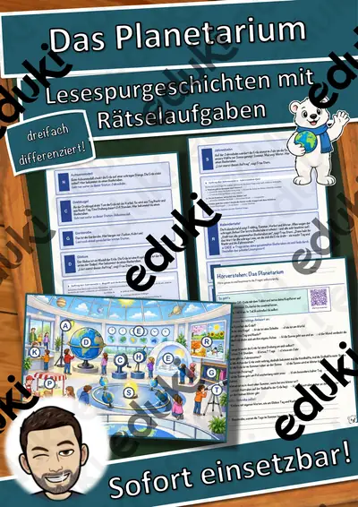
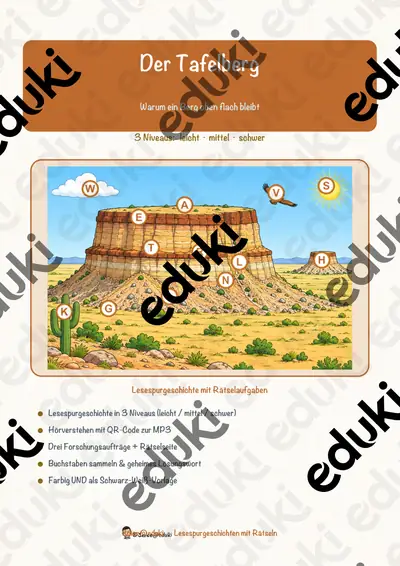

Materialpaket Winter für die 9. Klasse: 5 Lesespurgeschichten mit Rätselaufgaben fächerübergreifend (Hungerwinter 1947, Permafrost, Christbaummarkt & mehr)

Materialpaket Winter und Advent für die 8. Klasse: 10 Lesespurgeschichten mit Rätselaufgaben fächerübergreifend (Polarlichter, Streusalz, Krippenbau & mehr)

Der Wettlauf zum Südpol – eine Expedition ins ewige Eis – Lesespurgeschichte mit Rätselaufgaben (Klasse 7)

Weltwassertag – das versteckte Wasser in Alltagsdingen – Lesespurgeschichte mit Rätselaufgaben (Klasse 7)

Woher kommt mein Spielzeug – die Weltreise eines Spielzeugautos – Lesespurgeschichte mit Rätselaufgaben (Klasse 8)

Regional oder importiert – Obst und Gemüse im Winter – Lesespurgeschichte mit Rätselaufgaben (Klasse 7)

Milch – vom Hof ins Kühlregal – Lesespurgeschichte mit Rätselaufgaben (Klasse 6)

Das Tiefdruckgebiet – Lesespurgeschichte mit Rätselaufgaben (Klasse 8)

Der Nationalpark – Lesespurgeschichte mit Rätselaufgaben (Klasse 5)

Das Planetarium – Lesespurgeschichte mit Rätselaufgaben (Klasse 5)

Die Weinlese – Lesespurgeschichte mit Rätselaufgaben (Klasse 7)

Der Treibhauseffekt – Lesespurgeschichte mit Rätselaufgaben (Klasse 9)

Der Tafelberg – Lesespurgeschichte mit Rätselaufgaben (Klasse 9)

Die Gezeiten – Lesespurgeschichte mit Rätselaufgaben (Klasse 9)

Der Hurrikan – Lesespurgeschichte mit Rätselaufgaben (Klasse 9)

Der Canyon – Lesespurgeschichte mit Rätselaufgaben (Klasse 8)

Die Sanddüne – Lesespurgeschichte mit Rätselaufgaben (Klasse 8)

Die Taiga – Lesespurgeschichte mit Rätselaufgaben (Klasse 8)

Die Erde – Lesespurgeschichte mit Rätselaufgaben (Klasse 8)

Die Tundra – Lesespurgeschichte mit Rätselaufgaben (Klasse 8)

Das Hochgebirge – Lesespurgeschichte mit Rätselaufgaben (Klasse 8)

Die Savanne – Lesespurgeschichte mit Rätselaufgaben (Klasse 8)

Der Eisberg – Lesespurgeschichte mit Rätselaufgaben (Klasse 8)

Die Höhle – Lesespurgeschichte mit Rätselaufgaben (Klasse 8)

Der Brunnen – Lesespurgeschichte mit Rätselaufgaben (Klasse 8)

Der Meeresboden – Lesespurgeschichte mit Rätselaufgaben (Klasse 8)

Die Oase – Lesespurgeschichte mit Rätselaufgaben (Klasse 8)

Der Salzstock – Lesespurgeschichte mit Rätselaufgaben (Klasse 9)

Der Braunkohletagebau – Lesespurgeschichte mit Rätselaufgaben (Klasse 8)

Die Lawine – Lesespurgeschichte mit Rätselaufgaben (Klasse 8)
Keine Materialien gefunden – versuch einen anderen Suchbegriff oder Filter.
Räume lesen und verstehen
Erdkunde verlangt, Orte, Zahlen und Prozesse miteinander zu verbinden. Viele Materialien dieser Seite sind deshalb Lesespurgeschichten: Die Stationen bilden einen Raum oder einen Vorgang ab, und die Klasse orientiert sich mit einem Lageplan. Daneben gibt es Steckbriefe, Lückentexte und Prüfungstrainings für Klasse 8 bis 10.
Klasse 3 und 4: Länder kennenlernen
Für die Grundschule gibt es Länder-Steckbriefe, die sich zu einem Reisepass zusammenfügen lassen. „Länder-Reisepass: Steckbriefe für Europa und die Welt“ bildet den Rahmen, einzelne Steckbriefe wie „Steckbrief Europa (Slowenien)“ oder „Steckbrief Europa (Schweden)“ liefern die Inhalte. Auch das „Materialpaket Steckbriefe Länder Europa“ bündelt diese Reihe.
Klasse 5 und 6: Natur und Lebensraum
In der Orientierungsstufe geht es um das, was man vor der Haustür und im Alltag findet: „Der Boden“, „Der Nationalpark“, „Das Bergwerk“, „Die Orientierung“ und „Das Planetarium“ in Klasse 5, „Der Wasserkreislauf“, „Das Gewitter“, „Das Trinkwasser“ und „Wenn die Erde bebt“ in Klasse 6.
Klasse 7 bis 9: Klima, Wirtschaft und Naturräume
Mit „Der Vulkan“, „Die Weinlese“ und „Regional oder importiert“ (Klasse 7) wird der Blick weiter. In Klasse 8 stehen Themen wie „Das Tiefdruckgebiet“, „Der Canyon“, „Die Sanddüne“ und „Woher kommt mein Spielzeug“ im Zentrum, in Klasse 9 „Der Treibhauseffekt“, „Der Tafelberg“, „Die Gezeiten“ und „Der Hurrikan“. Für Klasse 8 bis 10 gibt es zusätzlich Prüfungstrainings.
Gerade bei Themen wie Klima und Naturgefahren hilft es, dieselbe Geschichte in verschiedenen Niveaustufen zu lesen. So können stärkere Schülerinnen und Schüler Zusammenhänge selbst erschließen, während andere mit kürzeren Texten sicher zum Lösungswort kommen.
Häufige Fragen
Gibt es Material zu einzelnen Ländern?
Ja, vor allem in Form von Steckbriefen für Europa. Sie sind für die Klassen 3 und 4 geschrieben und lassen sich im Reisepass sammeln.
Wie anspruchsvoll sind die Lesespuren in Erdkunde?
Jede Geschichte hat drei Niveaustufen, sodass dieselbe Klasse mit unterschiedlicher Textlänge arbeiten kann.
Kann ich einzelne Themen kombinieren?
Ja. Themen wie „Das Gewitter“, „Der Wasserkreislauf“ und „Das Tiefdruckgebiet“ lassen sich zu einer eigenen Wetterreihe verbinden, auch über mehrere Klassen hinweg.
Sind aktuelle Daten enthalten?
Die Materialien erklären Zusammenhänge. Zahlenangaben und Wahlergebnisse in einzelnen Titeln beziehen sich auf den genannten Zeitpunkt und sollten bei Bedarf geprüft werden.